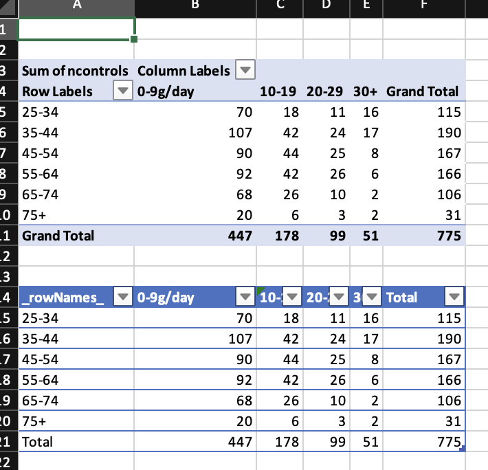
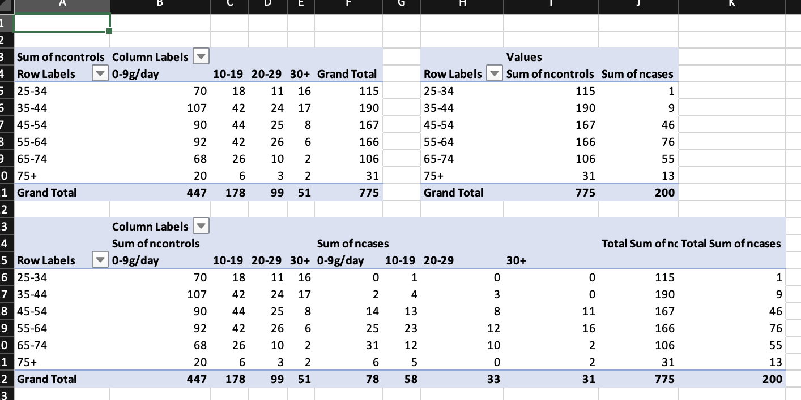
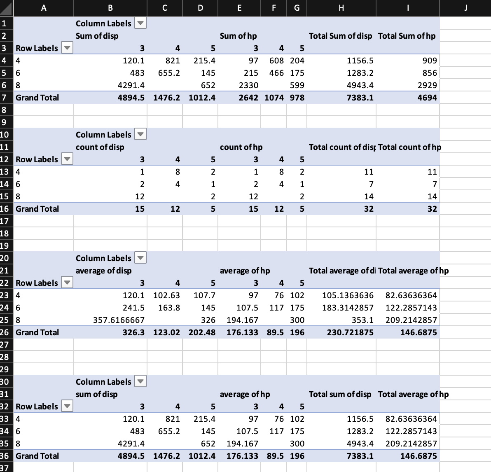
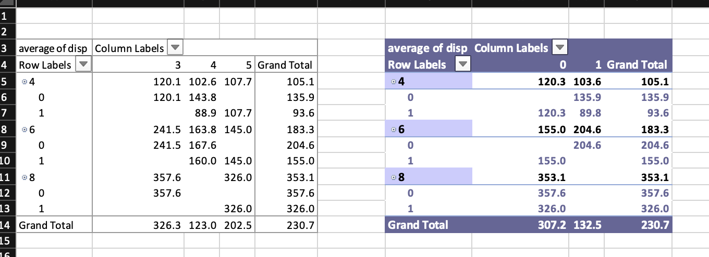
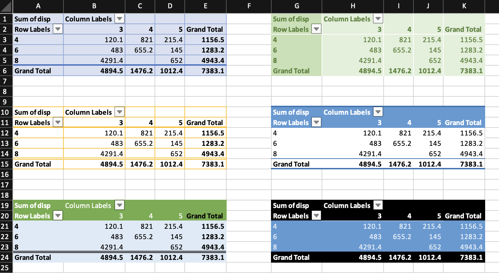
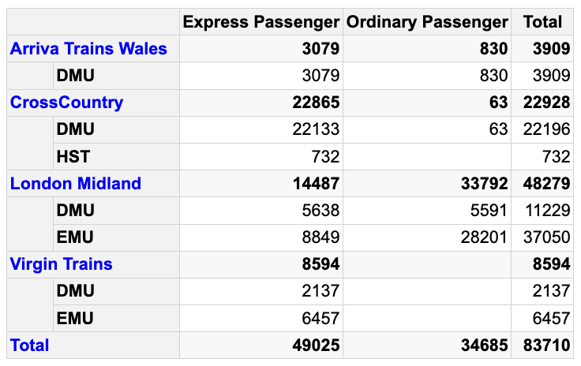
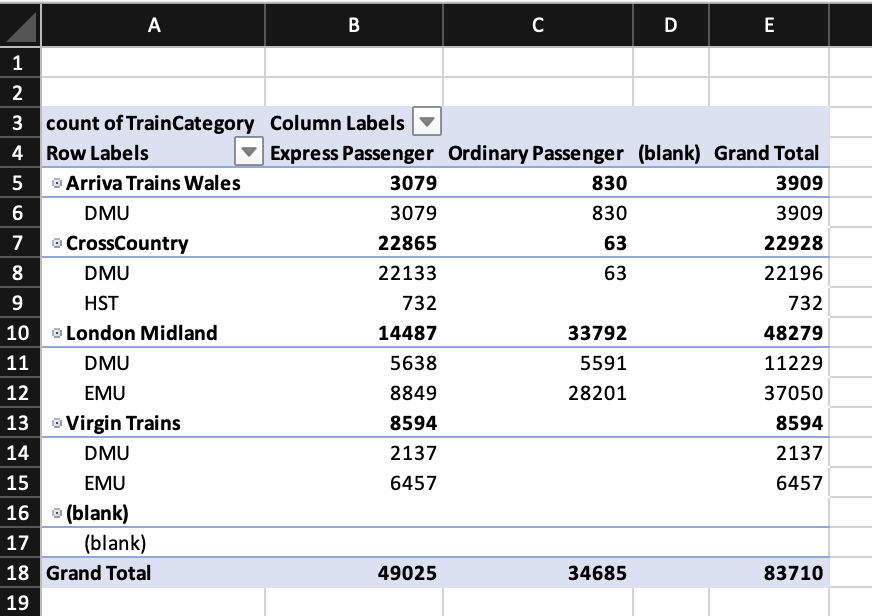
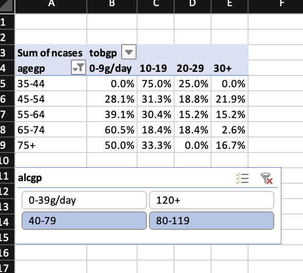

library(openxlsx2)
wb <- wb_workbook()$
add_worksheet()$
add_data(x = esoph)
df <- wb_data(wb)
wb$add_pivot_table(df, rows = "agegp", cols = "tobgp", data = c("ncontrols"))
# for visual comparison
library(pivottabler)
pt <- PivotTable$new()
pt$addData(esoph)
pt$addColumnDataGroups("tobgp")
pt$addRowDataGroups("agegp")
pt$defineCalculation(calculationName="ncontrols", summariseExpression="sum(ncontrols)")
pt$evaluatePivot()
pt
#> 0-9g/day 10-19 20-29 30+ Total
#> 25-34 70 18 11 16 115
#> 35-44 107 42 24 17 190
#> 45-54 90 44 25 8 167
#> 55-64 92 42 26 6 166
#> 65-74 68 26 10 2 106
#> 75+ 20 6 3 2 31
#> Total 447 178 99 51 775
wb$add_data_table(dims = "A14", x = pt$asDataFrame(), row_names = TRUE)
if (interactive()) wb$open()8 Pivot tables
Pivot tables are a feature of spreadsheet software dating back to Lotus Improv. They allow creating interactive tables to aggregate data that still allows the user to modify the table, by changing the aggregation function or variables. Pivot tables are frequently used in reports to create something like a dashboard.
Even though they are a long requested feature, it took a while until support was added to openxlsx2. Since release 0.5 users are able to use wb_add_pivot_table() and since then support was further improved and now it is also possible to add slicers to pivot tables. Slicers further increase the dashboard character of pivot tables, as they provide a button interface to filter the pivot table.
The state of pivot tables is now that they work quite well, though they bring a few features users should be aware of. Most importantly, our function only provides the spreadsheet with an instruction set how to create the pivot table, while the actual sheet where the table is supposed to appear remains empty until it is evaluated by the spreadsheet software. This is similar to our approach with formulas.
Please, though, be a little careful if you start experimenting with pivot table params as there are actual cases, where the instruction set results into spreadsheet software crashes. Make copies and try to prevent some headaches afterwards.
8.1 Adding pivot tables

Unlike pivottabler the pivot tables in openxlsx2 are not evaluated. Therefore there is nothing in the sheet region A3:F11 and if you write something here, spreadsheet software will complain.1
8.1.1 Filter, row, column, and data
Similar to pivot tables in Excel, it is possible to assign variables to the table dimensions filter, row, column, and data. It is not required to have all dimensions filled. You can assign each variable only once per dimension, but can combine multiple variables.
wb <- wb_workbook()$
add_worksheet()$
add_data(x = esoph)
df <- wb_data(wb)
wb$add_pivot_table(df, dims = "A3", rows = "agegp", cols = "tobgp", data = c("ncontrols"))
wb$add_pivot_table(df, dims = "A13", rows = "agegp", data = c("ncontrols", "ncases"))
wb$add_pivot_table(df, dims = "A18", rows = "agegp", cols = "tobgp", data = c("ncontrols", "ncases"))
8.1.2 Sorting
Using sort_item it is possible to order the pivot table. sort_item can take either integers or characters, the latter is beneficial in cases as below, where the variable you want to sort is a factor. Though, be aware that pivot table uses a different approach to distinct unique elements and that Berlin and BERLIN are identical to it. You can check for distinct cases with openxlsx2:::distinct().
library(openxlsx2)
tbl_prueba_2 <- data.frame(
var_1 = as.Date(rep(
c(
"2023-02-01", "2023-03-01", "2023-04-01", "2023-05-01", "2023-06-01",
"2023-07-01", "2023-08-01", "2023-09-01", "2023-10-01", "2023-11-01",
"2023-12-01", "2024-01-01", "2024-02-01", "2024-03-01"
),
each = 2L
)),
var_2 = rep(2:15, each = 2L),
year = rep(c(2023, 2024), c(22L, 6L)),
month = ordered(
rep(
c(
"Feb", "Mar", "Apr", "May", "Jun", "Jul", "Aug", "Sep", "Oct", "Nov", "Dec",
"Jan", "Feb", "Mar"
),
each = 2L
),
levels = c("Jan", "Feb", "Mar", "Apr", "May", "Jun", "Jul", "Aug", "Sep", "Oct", "Nov", "Dec")
)
)
wb_1 <- wb_workbook() |>
wb_add_worksheet() |>
wb_add_data(x = tbl_prueba_2)
df <- wb_data(wb_1)
wb_1 <- wb_1 |>
wb_add_pivot_table(
x = df,
cols = c("year", "month"),
data = "var_2",
fun = "sum",
params = list(
sort_item = list(month = rev(levels(tbl_prueba_2$month)))
)
)
if (interactive()) wb_1$open()8.1.3 Aggregation functions
The default aggregation function is SUM, but others are possible as well: AVERAGE, COUNT, COUNTA, MAX, MIN, PRODUCT, STDEV, STDEVP, SUM, VAR, VARP. This is limited to functions available in the openxml specification. Each data variable can use a different function.
wb <- wb_workbook()$
add_worksheet()$
add_data(x = mtcars)
df <- wb_data(wb)
wb$add_pivot_table(df, dims = "A1", rows = "cyl", cols = "gear", data = c("disp", "hp"))
wb$add_pivot_table(df, dims = "A10", sheet = 2, rows = "cyl", cols = "gear", data = c("disp", "hp"), fun = "count")
wb$add_pivot_table(df, dims = "A20", sheet = 2, rows = "cyl", cols = "gear", data = c("disp", "hp"), fun = "average")
wb$add_pivot_table(df, dims = "A30", sheet = 2, rows = "cyl", cols = "gear", data = c("disp", "hp"), fun = c("sum", "average"))
8.1.4 Styling pivot tables
There is no real support for individual pivot table styles. Aside from the default style, it is possible to disable the style and to apply auto format styles (for various styles see annex G.3 - Built-in PivotTable AutoFormats of ECMA-376-1 (2016)). In the example below style id 4099 is applied, ids range from 4096 to 4117.
wb <- wb_workbook() %>%
wb_add_worksheet("table") %>%
wb_add_worksheet("data") %>%
wb_add_data(x = mtcars)
df <- wb_data(wb)
wb <- wb %>%
# pivot table without style
wb_add_pivot_table(
df, dims = "A3", sheet = "table",
rows = c("cyl", "am"), cols = "gear", data = "disp",
fun = "average",
params = list(no_style = TRUE, numfmt = c(formatCode = "##0.0"))
) %>%
# Applied a few params and use auto_format_id
wb_add_pivot_table(
df, dims = "G3", sheet = "table",
rows = c("cyl", "am"), cols = "vs", data = "disp",
fun = "average",
params = list(
apply_alignment_formats = TRUE,
apply_number_formats = TRUE,
apply_border_formats = TRUE,
apply_font_formats = TRUE,
apply_pattern_formats = TRUE,
apply_width_height_formats = TRUE,
auto_format_id = 4099,
numfmt = c(formatCode = "##0.0")
)
)
if (interactive()) wb$open()
With params it is possible to tweak many pivot table arguments such as params = list(col_header_caption = "test caption"). This way it is also possible to apply built in pivot table styles. The default is PivotStyleLight16 (for more built in styles see G.1 Built-in Table Styles of ECMA-376-1 (2016)).
library(openxlsx2)
wb <- wb_workbook()$
add_worksheet("table")$
add_worksheet("data")$add_data(x = mtcars)
df <- wb_data(wb)
wb$add_pivot_table(df, sheet = "table", dims = "A1", rows = "cyl", cols = "gear", data = "disp", params = list(table_style = "TableStyleMedium23"))
wb$add_pivot_table(df, sheet = "table", dims = "A10", rows = "cyl", cols = "gear", data = "disp", params = list(table_style = "TableStyleLight19"))
wb$add_pivot_table(df, sheet = "table", dims = "A19", rows = "cyl", cols = "gear", data = "disp", params = list(table_style = "TableStyleDark11"))
wb$add_pivot_table(df, sheet = "table", dims = "G1", rows = "cyl", cols = "gear", data = "disp", params = list(table_style = "PivotStyleMedium28"))
wb$add_pivot_table(df, sheet = "table", dims = "G10", rows = "cyl", cols = "gear", data = "disp", params = list(table_style = "PivotStyleMedium13"))
wb$add_pivot_table(df, sheet = "table", dims = "G19", rows = "cyl", cols = "gear", data = "disp", params = list(table_style = "PivotStyleDark20"))
if (interactive()) wb$open()
8.1.5 Pivot table dims
It is possible to use dims without end row. This way the entire column is used as input. This obviously is slower than using a fixed range, because the wb_data() object will contain each possible row. This is
# original pivot table as reference
library(pivottabler)
pt <- PivotTable$new()
pt$addData(bhmtrains)
pt$addColumnDataGroups("TrainCategory")
pt$addRowDataGroups("TOC",
outlineBefore=list(isEmpty=FALSE, groupStyleDeclarations=list(color="blue")),
outlineTotal=list(isEmpty=FALSE, groupStyleDeclarations=list(color="blue")))
pt$addRowDataGroups("PowerType", addTotal=FALSE)
pt$defineCalculation(calculationName="TotalTrains", summariseExpression="n()")
# use A:P
wb <- wb_workbook()$add_worksheet()$add_data(x = bhmtrains, na.strings = NULL)
df <- wb_data(wb, dims = "A:P")
# use TrainCategory on column and data
wb$add_pivot_table(
df,
rows = c("TOC", "PowerType"),
cols = "TrainCategory",
data = "TrainCategory",
fun = "count"
)
if (interactive()) wb$open()
8.1.6 Using number formats
## Pivot table example 1
wb <- wb_workbook() %>% wb_add_worksheet() %>% wb_add_data(x = mtcars, inline_strings = F)
wb$add_numfmt(dims = wb_dims(x = mtcars, cols = "disp"), numfmt = "$ #,###")
df <- wb_data(wb)
# basic pivot table with filter, rows, cols and data
wb$add_pivot_table(
df,
rows = "cyl", cols = "gear",
data = c("disp", "hp"),
fun = c("sum", "count"),
params = list(
numfmt = c(formatCode = "$ ###", formatCode = "#")
))8.2 Adding slicers to pivot tables
Since openxlsx2 release 1.1 it is possible to add slicers to pivot tables created with wb_add_pivot_tables(). For this to work you have to provide a name for a pivot table name you are going to add and make sure that the slicer variable is actually ‘activated’ in the pivot table. Adding slicers to loaded pivot tables is not possible and the creation of slicers needs to go hand in hand with a pivot table.
It is possible to apply slicer styles with params = list(style = "SlicerStyleLight2")
wb <- wb_workbook() %>%
wb_add_worksheet() %>% wb_add_data(x = mtcars)
df <- wb_data(wb, sheet = 1)
wb$
add_pivot_table(
df, dims = "A3", slicer = "vs", rows = "cyl", cols = "gear", data = "disp",
pivot_table = "mtcars"
)$
add_slicer(x = df, dims = "B7:D9", slicer = "vs", pivot_table = "mtcars",
params = list(edit_as = "twoCell", style = "SlicerStyleLight2"))
if (interactive()) wb$open()It is possible to tweak the number of columns in a slicer using columnCount and to add a caption and change the sorting order to descending.
wb <- wb_workbook() %>%
### Sheet 1
wb_add_worksheet() %>%
wb_add_data(x = mtcars)
df <- wb_data(wb, sheet = 1)
varname <- c("vs", "drat")
### Sheet 2
wb$
# first pivot
add_pivot_table(
df, dims = "A3", slicer = varname, rows = "cyl", cols = "gear", data = "disp",
pivot_table = "mtcars"
)$
add_slicer(x = df, sheet = current_sheet(), slicer = "vs", pivot_table = "mtcars")$
add_slicer(x = df, dims = "B18:D24", sheet = current_sheet(), slicer = "drat", pivot_table = "mtcars",
params = list(columnCount = 5))$
# second pivot
add_pivot_table(
df, dims = "G3", sheet = current_sheet(), slicer = varname, rows = "gear", cols = "carb", data = "mpg",
pivot_table = "mtcars2"
)$
add_slicer(x = df, dims = "G12:I16", slicer = "vs", pivot_table = "mtcars2",
params = list(sortOrder = "descending", caption = "Wow!"))
### Sheet 3
wb$
add_pivot_table(
df, dims = "A3", slicer = varname, rows = "gear", cols = "carb", data = "mpg",
pivot_table = "mtcars3"
)$
add_slicer(x = df, dims = "A12:D16", slicer = "vs", pivot_table = "mtcars3")
if (interactive()) wb$open()8.3 Choosing variable filters
Using the choose param argument it is possible to select subsets of the data. The code looks like this: choose = c(agegp = 'x > "25-34"'). The variable name as seen in the wb_data() object, x is mandatory and some expression that R understands. This can be something like %in%, ==, <, >, or !=.
wb <- wb_workbook() %>%
wb_add_worksheet("table") %>%
wb_add_worksheet("data") %>%
wb_add_data(x = datasets::esoph)
df <- wb_data(wb)
# add a pivot table and a slicer and preselect
# a few cases and style it a bit
wb <- wb %>%
wb_add_pivot_table(
df, dims = "A3", sheet = "table",
rows = "agegp", cols = "tobgp", data = "ncases",
slicer = "alcgp", pivot_table = "pt1",
param = list(
show_data_as = c("percentOfRow"),
numfmt = c(formatCode = "0.0%"),
compact = FALSE, outline = FALSE, compact_data = FALSE,
row_grand_totals = FALSE, col_grand_totals = FALSE,
choose = c(agegp = 'x > "25-34"')
)
) %>%
wb_add_slicer(
x = df, dims = "B14:D18",
slicer = "alcgp", pivot_table = "pt1",
param = list(
columnCount = 2,
choose = c(alcgp = 'x %in% c("40-79", "80-119")')
)
)
if (interactive()) wb$open()
8.4 Final remarks
As of now it is not possible to add charts to pivot tables. This would require pivot table evaluation to construct the wb_data() object to use for and access to the area where the pivot table is stored on the sheet.
It is always a good idea to check that the constructed pivot table and the expected pivot table match. Either construct the pivot table manually or as shown here via pivottabler or maybe with either data.table or dplyr. It is a little tricky for openxlsx2 to check if the pivot table works, when we have no real way to validate that it does.
There are still missing features such as timelines and it is currently not possible to calculate fields in pivot tables. Please note that this is also not something we are currently developing.
It should be possible to integrate results similar to
pivottablerintowb_add_pivot_table()so that you should be able to have evaluated pivot tables straight ahead. Pull requests are welcome.↩︎